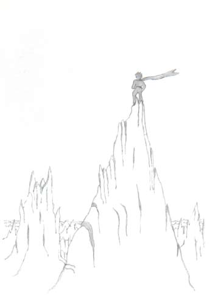

小王子爬上一座高山。过去他所见过的山就是那三座只有他膝盖那么高的火 山，并且他把那座熄灭了的火山就当作凳子。小王子自言自语地说道：“从这么 高的山上，我一眼可以看到整个星球，以及所有的人。”可是，他所看到的只是 一些非常锋利的悬崖峭壁。

“你好。”小王子试探地问道。
“你好……你好……你好……”回音在回答道。
“你们是什么人？”小王子问。
“你们是什么人……你们是什么人……你们是什么人……”回音又回答道。
“请你们做我的朋友吧，我很孤独。”他说。
“我很孤独……我很孤独……我很孤独……”回音又回答着。
小王子想道：“这颗行星真奇怪！它上面全是干巴巴的，而且又尖利又咸涩， 人们一点想象力都没有。他们只是重复别人对他们说的话……在我的家乡，我有一 朵花。她总是自己先说话……”